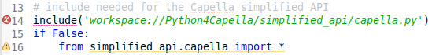
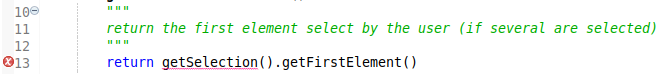
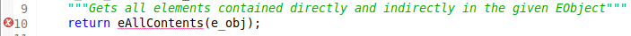
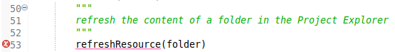
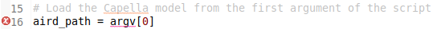
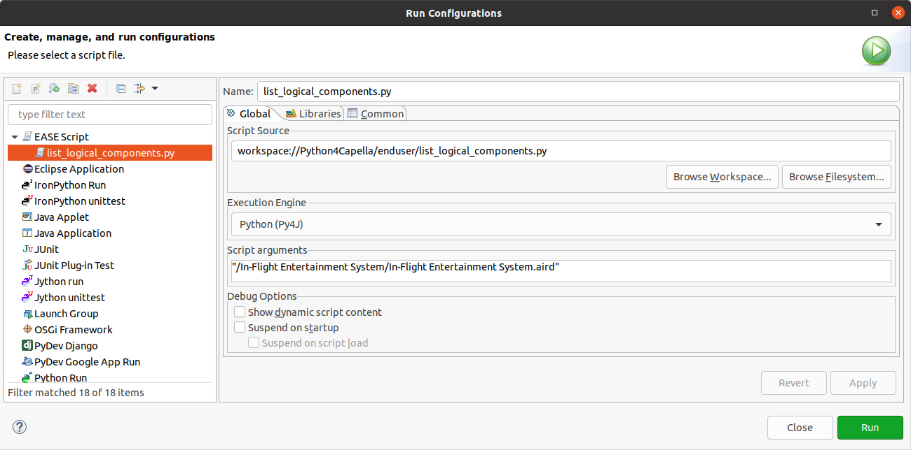

This section explains how you can run your Python4Capella script either within Capella or from the command line.
Note:
If you open provided scripts, you will notice some errors in them. Those errors can be ignored. They are related to the use of EASE that allows access to Java objects with the PyDev editor.
EASE is a scripting environment for Eclipse.
It allows to create, maintain and execute script code in the context of the running Eclipse instance. Therefore such scripts may manipulate and extend the IDE itself.
The PyDev editor only recognize the Python language, and EASE add a custom way to import other scripts, declare methods and variables. At runtime EASE will be used and everything will work properly.
- some import directives from EASE are not recognized by PyDev

- some methods defined in EASE modules are not recognized by PyDev



- some other errors can happen when accessing variables defined by EASE

You will need to enable Development capabilities if it’s not already done.
You can now select your script and right click on it:
- select the Run As / EASE Script menu
If your script take some arguments, you can change the launch configuration by right clicking on your script:
- select the Run As / Run configuration menu.
This will open the launch configuration for your script and you can edit it to add parameters for instance.

This feature is available for Capella 1.4.1 and above.
Even if you are running in a command line, Capella needs a graphical interface and a windows manager. If you are running Python4Capella on a Linux server, make sure you have a graphical interface and a window manager installed and runnning.
You can also run your Python4Capella script from the command line:
Windows
eclipsec.exe -nosplash -consolelog -application org.polarsys.capella.core.commandline.core -appid org.eclipse.python4capella.commandline -data .\workspace -script workspace:/Python4Capella/sample_scripts/my_script.py *arguments*
Linux and Mac OS X
./eclipse -nosplash -consolelog -application org.polarsys.capella.core.commandline.core -appid org.eclipse.python4capella.commandline -data ./workspace -script workspace:/Python4Capella/sample_scripts/my_script.py *arguments*
Note: Since Capella 5.0 the eclipse executable has been renamed to capella, you should use:
Windows
capellac.exe -nosplash -consolelog -application org.polarsys.capella.core.commandline.core -appid org.eclipse.python4capella.commandline -data .\workspace -script workspace:/Python4Capella/sample_scripts/my_script.py *arguments*
Linux and Mac OS X
./capella -nosplash -consolelog -application org.polarsys.capella.core.commandline.core -appid org.eclipse.python4capella.commandline -data ./workspace -script workspace:/Python4Capella/sample_scripts/my_script.py *arguments*